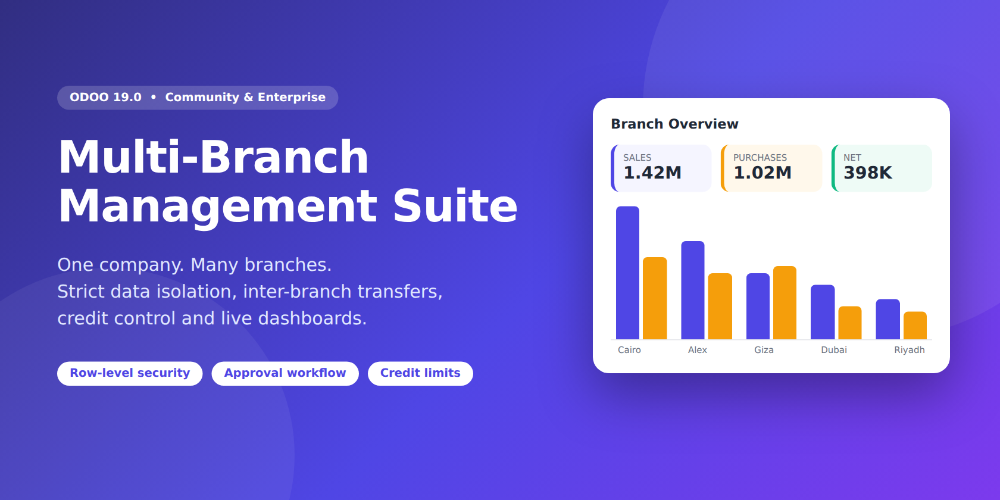
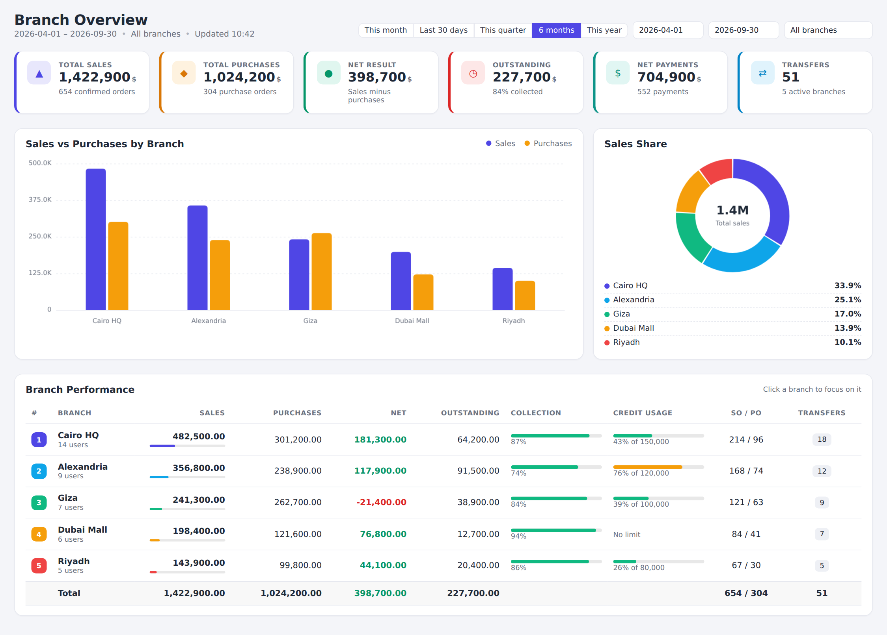
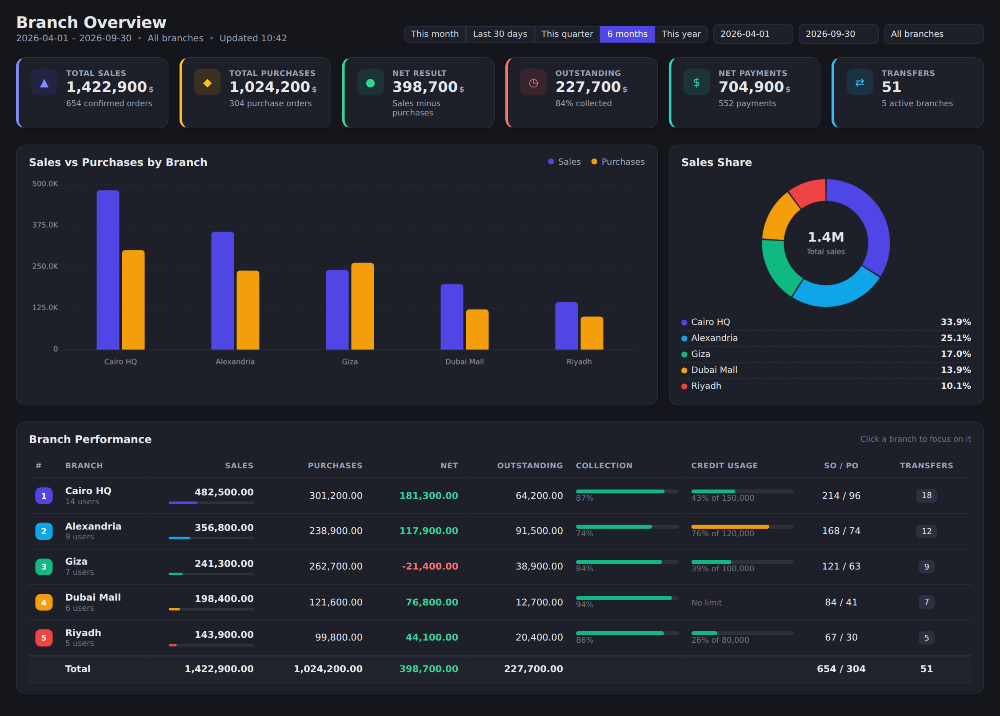
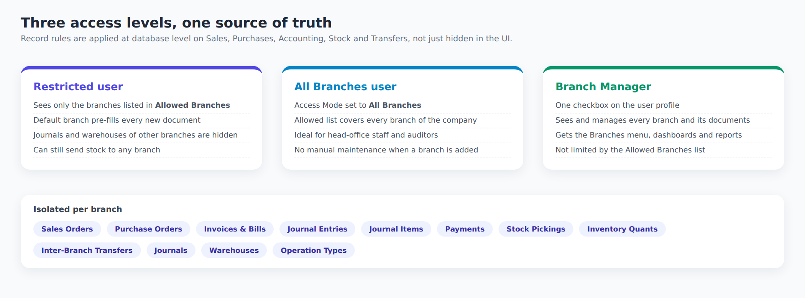
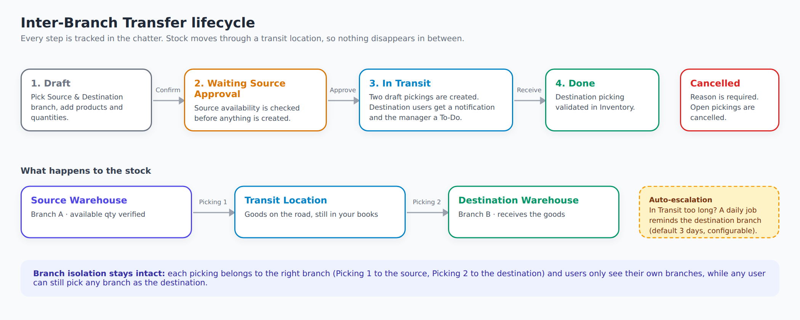
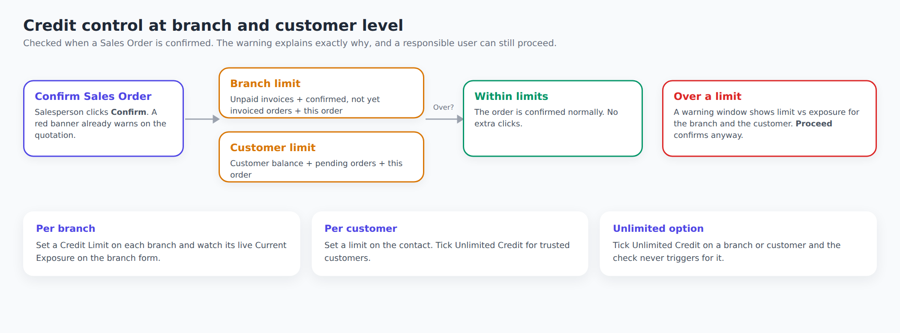

Multi-Branch Management Suite gives retail chains, distributors and multi-site businesses a clean branch layer on top of a single company: every sale, purchase, invoice, payment and stock move belongs to a branch, every user sees only what they should, and head office gets a live view of all of it.
Branch Overview puts the numbers a head office asks for every morning on one screen: sales, purchases, net result, outstanding receivables, payments and transfers, compared branch by branch.


Give each user a default branch and the branches they may work with, or switch them to All Branches. Branch Managers see everything.

Move goods between branches with a clear paper trail. Stock leaves the source warehouse, sits in a transit location and lands in the destination warehouse only when the receiving team validates it.


Five steps from installation to the first branch order.
| Field | What it does |
|---|---|
| Branch Name / Code | The code is generated from a sequence (BR-0001, BR-0002...) and must be unique per company. You may edit it. |
| Company | The company the branch belongs to. Its warehouse must belong to the same company. |
| Warehouse | Used by default on the branch's orders and as the source or destination of inter-branch transfers. One warehouse belongs to one branch, and the link is kept in sync with the warehouse form. |
| Sales Journal | Applied to the branch's Sales Orders and the invoices created from them. |
| Purchase Journal | Applied to the branch's Purchase Orders and the vendor bills created from them. |
| Payment Journals | Cash and bank journals this branch can register payments with. |
| Analytic Account | Added automatically to order lines and posted journal items, so branch profitability is available in your analytic reports. |
| Branch Manager | Receives destination-side notifications for inter-branch transfers. |
| Unlimited Credit / Credit Limit | Maximum unpaid customer invoices allowed for the branch. Leave at 0 or tick Unlimited Credit to disable the check. |
| Current Exposure | Read-only. Unpaid balance of the branch's posted customer invoices. |
| Users tab | Lists the users allowed on this branch. |
| Field | What it does |
|---|---|
| Default Branch | Pre-fills the branch on every new document. Must be one of the Allowed Branches. |
| Allowed Branches | The branches the user can see and work with. |
| Branch Access Mode | Restricted to Selected Branches or All Branches. With All Branches the allowed list covers every branch of the user's companies. |
| Branch Manager | Sees and manages every branch and its documents, and gets the Branches app menu with dashboards and reports. |
| Where | Setting |
|---|---|
| Contacts | Branches (limit where the contact can be selected), Vendor Type (Local, Foreign, Service), Credit Limit, Unlimited Credit. |
| Products | Branches: limit the branches where the product can be sold or purchased. Empty means every branch. |
| Journals | Branch: reserve a journal for one branch. Empty means shared by all. |
| Warehouses | Branch: kept in sync with the Warehouse field of the branch. |
| Sales and Purchase Orders | Branch is required and fills the warehouse, journal and analytic account. |
| Purchase menu | Local, Foreign and Service Purchases, each with its own numbering (PO-LOC/, PO-FOR/, PO-SRV/) based on the vendor type. |
| Invoices and Payments | Branch is inherited from the order. When registering a payment, only journals of that branch (or shared journals) are offered. |
| Setting | Where / default |
|---|---|
| Transfer escalation delay | System Parameter branch_management.transfer_escalation_days. Default is 3 days. Create the parameter in Settings > Technical > System Parameters to change it (developer mode). |
| Escalation job | Scheduled action "Inter-Branch Transfer: Escalate Stale Transfers", runs daily. Each transfer is reminded only once. |
| Sequences | Branch Code (BR-), Inter-Branch Transfer (IBT/), Purchase Order Local, Foreign and Service. Editable in Settings > Technical > Sequences. |
The Sales, Purchases and Payments dashboards under Branches > Reports have their own filters (dates, branch, customer or vendor, salesperson) and export the current view to Excel or PDF in one click.
Depends only on standard apps: Discuss, Contacts, Sales, Purchase, Inventory and Invoicing. No external Python libraries.
Free bug-fix support is included. Contact: YOUR-SUPPORT-EMAIL